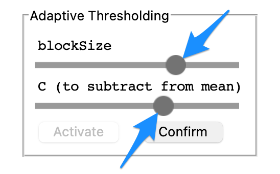
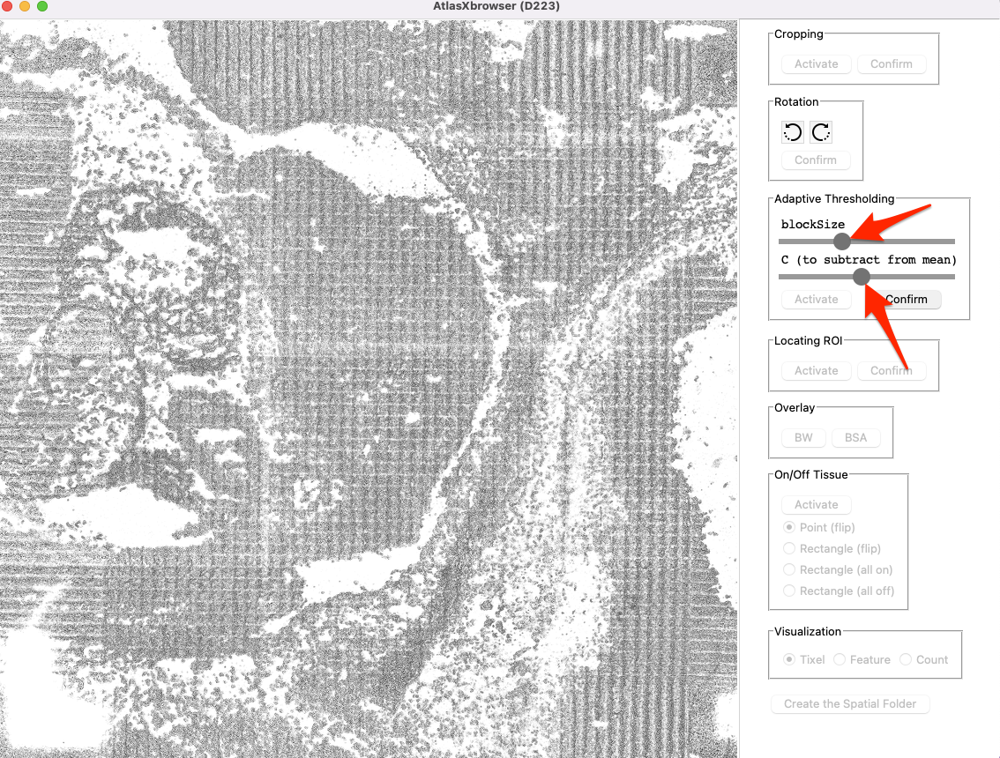
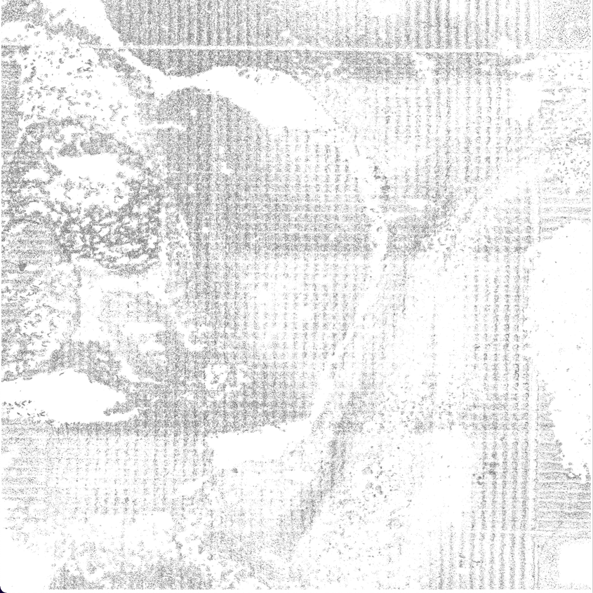

In order to determine purely from the image, which regions correspond to biological tissue and which do not,
we use adaptive thresholding to binarize the image by converting each pixel to either be black or white. From there we can make inferences, based
on the number of black vs. white pixels within a given tixel, as to whether a given tixel is ontop of tissue, or not.
To understand this process it is useful to remember that a digital image is a essentially a grid of pixels, each taking on
a discrete color. Each pixel can take on one of \(2^8\) different possibilites, with values from 0 to 255. Where a pixel
of value 0 is black, and 255 is white. In this step we take the image, with pixels each ranging in intensity from values 0 to 255, and
convert that image into one where each pixel either has the value of 0 or 255.
This is all done under the assumption that parts of the image corresponding to biological tissue will be darker than the rest of the
slide, so in an ideal outcome, all biological tissue is designated as black and everything else is classifed as white.
Navigate to the Adaptive Thresholding tab on the right side of the screen and select Activate.
Slide the BlockSize slider and C slider to find the optimal gradient between the sections of the images corresponding to tissue and those not. Use the examples below as a guide for this process.


The contrast in this binarized black and white image is optimized using the sliders controlling C value and blocksize parameters.
The BlockSize and C parameters are used to calculate the local pixel intensity threshold which divides pixels to be turned black to those turned white.
This threshold, T, is calculated by \(T = mean(I_L) - C\)
\(I_L\) refers to the local region of the image being observed, with the size of this region determined by the BlockSize variable described below.
BlockSize: How many pixels taken into account when calculating threshold value for a given region.
A Blocksize too large takes into account too much of the image, and when factors such as lighting are non-uniform, this can produce non optimal results.
Blocksize too small does not take enough of the image into account and so the threshold value are somewhat “overfit” to the region.
C is a constant subtracted from this local mean regulating how far above or below the mean a pixel must be to recieve a white classification.
Larger values of C directly decrease the threshold value, meaning more pixels will be above this value, and thus more pixels will be classified as white. As such, a C value too large, runs the risk of making the image too light, resulting in the classification of tissue as non-tissue.
Conversely, smaller values of C cause a smaller proportion of the pixels to be above this threshold, leading to many pixels being designated as black. As such, a C value too small runs the risk of misclassifying off tissue sites as on tissue.
Once the gradient of the image is configured as desired, select the Confirm button within the Adaptive Thresholding tab.
This is an example of too many of the pixels being classified as black, which leads to off tissue sites being designated as on tissue sites.

This is an example of not enough pixels being classified as black, leading to sites which are truly on tissue, being classified as off tissue.
This is an example of there being a good contrast between the on and off tissue sites of the image, ideally this will lead to a large proportion of the tixels being classified properly.